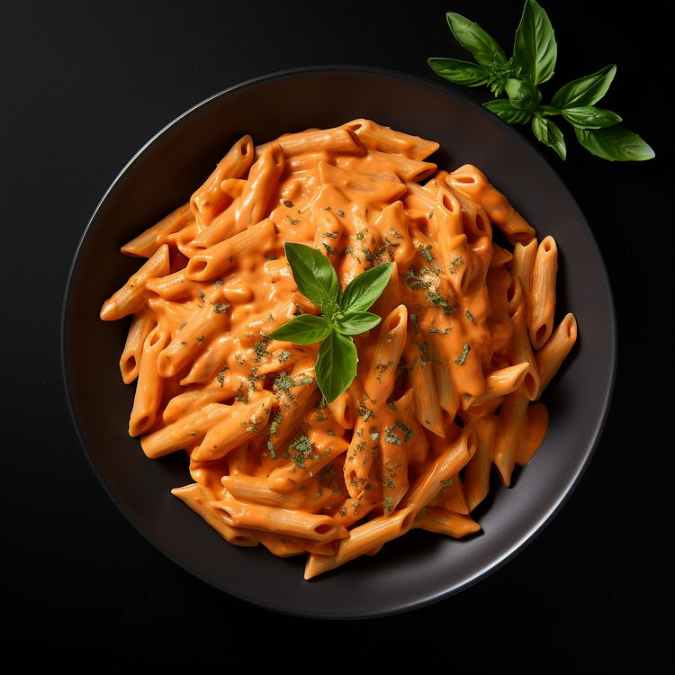

Pasta

Pasta is a simple and delicious Italian dish made by cooking pasta noodles and combining them with a flavorful sauce, vegetables, herbs, and other ingredients. It is easy to prepare and can be customized with different sauces and toppings.
Ingredients
- 200g pasta
- 2 tablespoons olive oil
- 2 cloves garlic
- 1 cup tomato sauce
- 1/2 teaspoon salt
- 1/4 teaspoon black pepper
- 1/2 teaspoon dried oregano
- 1/4 cup grated Parmesan cheese
Steps
- Bring a pot of water to a boil and add a little salt.
- Add the pasta and cook according to the package instructions until tender.
- Drain the pasta and set it aside.
- Heat olive oil in a pan and sauté the chopped garlic for a few seconds.
- Add the tomato sauce, salt, black pepper, and oregano.
- Simmer the sauce for a few minutes.
- Add the cooked pasta to the sauce and mix well.
- Serve the pasta with grated Parmesan cheese on top.